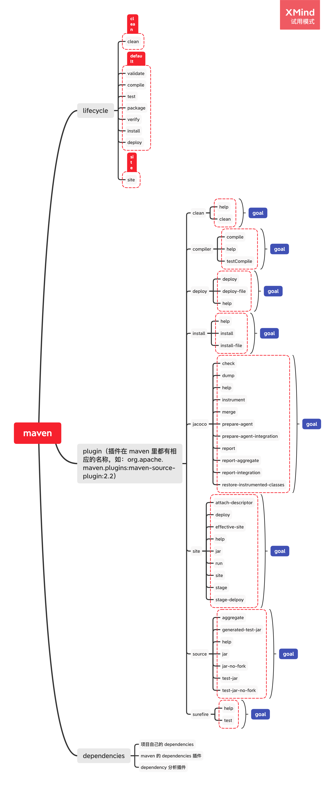

<!DOCTYPE html>
<html>
<head><meta name="generator" content="Hexo 3.9.0">
  <meta charset="utf-8">
  
  <title>Maven 构建生命周期 | 守株阁</title>
  <meta name="viewport" content="width=device-width, initial-scale=1, maximum-scale=1">
  <meta name="description" content="maven-生命周期.xmind 构建生命周期的基础知识Maven 基于一个“构建生命 周期”的中心概念，也就意味着构建和发布一个特定的工件（也就是工程）的过程已经被清晰地定义了。 有三种内置的生命周期：default，clean 和 site。default 生命周期处理处理项目部署，clean 生命周期处理项目清理，site 生命周期处理项目的站点（site）文档的创建。 实际上这些 life">
<meta name="keywords" content="Java,Maven">
<meta property="og:type" content="article">
<meta property="og:title" content="Maven 构建生命周期">
<meta property="og:url" content="http://yoursite.com/2018/10/21/Maven-构建生命周期/index.html">
<meta property="og:site_name" content="守株阁">
<meta property="og:description" content="maven-生命周期.xmind 构建生命周期的基础知识Maven 基于一个“构建生命 周期”的中心概念，也就意味着构建和发布一个特定的工件（也就是工程）的过程已经被清晰地定义了。 有三种内置的生命周期：default，clean 和 site。default 生命周期处理处理项目部署，clean 生命周期处理项目清理，site 生命周期处理项目的站点（site）文档的创建。 实际上这些 life">
<meta property="og:locale" content="zh-Hans">
<meta property="og:image" content="http://yoursite.com/2018/10/21/Maven-构建生命周期/maven-生命周期.png">
<meta property="og:updated_time" content="2020-06-03T09:27:44.917Z">
<meta name="twitter:card" content="summary">
<meta name="twitter:title" content="Maven 构建生命周期">
<meta name="twitter:description" content="maven-生命周期.xmind 构建生命周期的基础知识Maven 基于一个“构建生命 周期”的中心概念，也就意味着构建和发布一个特定的工件（也就是工程）的过程已经被清晰地定义了。 有三种内置的生命周期：default，clean 和 site。default 生命周期处理处理项目部署，clean 生命周期处理项目清理，site 生命周期处理项目的站点（site）文档的创建。 实际上这些 life">
<meta name="twitter:image" content="http://yoursite.com/2018/10/21/Maven-构建生命周期/maven-生命周期.png">
  
    <link rel="alternate" href="/atom.xml" title="守株阁" type="application/atom+xml">
  
  
    <link rel="icon" href="/favicon.png">
  
  
  <link rel="stylesheet" href="/css/style.css">
  

<link rel="stylesheet" href="/css/prism.css" type="text/css">
<link rel="stylesheet" href="/css/prism-line-numbers.css" type="text/css"></head>
</html>
<body>
  <div id="container">
    <div id="wrap">
      <header id="header">
  <div id="banner"></div>
  <div id="header-outer" class="outer">
    
    <div id="header-inner" class="inner">
      <nav id="sub-nav">
        
          <a id="nav-rss-link" class="nav-icon" href="/atom.xml" title="RSS Feed"></a>
        
        <a id="nav-search-btn" class="nav-icon" title="搜索"></a>
      </nav>
      <div id="search-form-wrap">
        <form action="//google.com/search" method="get" accept-charset="UTF-8" class="search-form"><input type="search" name="q" class="search-form-input" placeholder="Search"><button type="submit" class="search-form-submit">&#xF002;</button><input type="hidden" name="sitesearch" value="http://yoursite.com"></form>
      </div>
      <nav id="main-nav">
        <a id="main-nav-toggle" class="nav-icon"></a>
        
          <a class="main-nav-link" href="/">首页</a>
        
          <a class="main-nav-link" href="/archives">归档</a>
        
          <a class="main-nav-link" href="/about">关于</a>
        
      </nav>
      
    </div>
    <div id="header-title" class="inner">
      <h1 id="logo-wrap">
        <a href="/" id="logo">守株阁</a>
      </h1>
      
        <h2 id="subtitle-wrap">
          <a href="/" id="subtitle">一切都是守株待兔，如切如磋，如琢如磨。I am just joking.</a>
        </h2>
      
    </div>
  </div>
</header>
      <div class="outer">
        <section id="main"><article id="post-Maven-构建生命周期" class="article article-type-post" itemscope itemprop="blogPost">
  <div class="article-meta">
    <a href="/2018/10/21/Maven-构建生命周期/" class="article-date">
  <time datetime="2018-10-21T06:05:18.000Z" itemprop="datePublished">2018-10-21</time>
</a>
    
  </div>
  <div class="article-inner">
    
    
      <header class="article-header">
        
  
    <h1 class="article-title" itemprop="name">
      Maven 构建生命周期
    </h1>
  

      </header>
    
    <div class="article-entry" itemprop="articleBody">
      
        <!-- Table of Contents -->
        
        <p><br><a href="maven-生命周期.xmind">maven-生命周期.xmind</a></p>
<h2 id="构建生命周期的基础知识"><a href="#构建生命周期的基础知识" class="headerlink" title="构建生命周期的基础知识"></a>构建生命周期的基础知识</h2><p>Maven 基于一个“构建生命 周期”的中心概念，也就意味着构建和发布一个特定的工件（也就是工程）的过程已经被清晰地定义了。</p>
<p>有三种内置的生命周期：default，clean 和 site。default 生命周期处理处理项目部署，clean 生命周期处理项目清理，site 生命周期处理项目的站点（site）文档的创建。</p>
<p>实际上这些 lifecycle 只是在（比如 idea 里）对 phase 归类的时候特别有用，我们平时使用 mvn 命令的时候是无法指定这几个生命周期的。</p>
<h3 id="一个构建生命周期是由多个阶段（phases）组成的"><a href="#一个构建生命周期是由多个阶段（phases）组成的" class="headerlink" title="一个构建生命周期是由多个阶段（phases）组成的"></a>一个构建生命周期是由多个阶段（phases）组成的</h3><p>上面每个生命周期是由不同的 phase 列表组成的。一个 phase 表示一个生命周期的一个 stage（这两者有什么差别？）。</p>
<p>default 里 phases 的顺序大致上是是 <code>validate</code> -&gt; <code>compile</code> -&gt; <code>test</code> -&gt; <code>package</code> -&gt; <code>verify</code> -&gt; <code>install</code> -&gt; <code>deploy</code>。</p>
<h3 id="使用命令行"><a href="#使用命令行" class="headerlink" title="使用命令行"></a>使用命令行</h3><p>如果我们使用命令：</p>
<pre class="line-numbers language-bash"><code class="language-bash">mvn <span class="token function">install</span>
<span aria-hidden="true" class="line-numbers-rows"><span></span></span></code></pre>
<p>实际上到 install 为止所有的phases 都会执行，所以我们通常只要指定执行某一个生命周期的最后一个目标  phase 就行了。</p>
<p>如果我们使用命令：</p>
<pre><code>mvn clean deploy
</code></pre><p>maven 会先进行清理，然后再进行部署。如果这是一个多 module 的项目（即有多个子项目），则会遍历每个项目以执行 clean 和 deploy。</p>
<h3 id="每一个构建-phase-是由构建-goal-组成的"><a href="#每一个构建-phase-是由构建-goal-组成的" class="headerlink" title="每一个构建 phase 是由构建 goal 组成的"></a>每一个构建 phase 是由构建 goal 组成的</h3><p>phase 下面还可以再细分，细分的单元就是 plugin goal。</p>
<p>plugin goal 其实是一个执行的任务（比 phase 更细粒度）一个 goal 可以和一个或者多个 phase 绑定，甚至在生命周期之外通过直接  invocation 运行。</p>
<pre class="line-numbers language-bash"><code class="language-bash">mvn clean dependency:copy-dependencies package
<span aria-hidden="true" class="line-numbers-rows"><span></span></span></code></pre>
<p>mvn 是一级命令。</p>
<p>clean 和 package 是二级命令，也就是 phase。</p>
<p>dependency 是三级命令，也就是 plugin。</p>
<p>copy-dependencies差不多可以说是参数，也就是 plugin goal。</p>
<p><strong>上面的命令就是执行 clean 及其前面所有的 phases 的所有 goal，单独执行 dependency 插件的 copy-dependencies goal，然后再执行 package 的所有 goal。</strong></p>
<p>一个 goal 被绑定到(bound 是 bind 的过去分词形式)多个 phase，这个 goal 会被执行多遍。</p>
<h2 id="设置你的项目来使用构建生命周期"><a href="#设置你的项目来使用构建生命周期" class="headerlink" title="设置你的项目来使用构建生命周期"></a>设置你的项目来使用构建生命周期</h2><p>如何把任务分配到构建 phases 里？</p>
<h3 id="packaging"><a href="#packaging" class="headerlink" title="packaging"></a>packaging</h3><p>第一个方法是使用 packaging，它对应的 POM 元素是<code>&lt;packaging&gt;</code>。它的有效值分别是：jar、war、ear 和 pom（pom 也是一个 packaging 值，证明这个项目是 purely meta data）。默认值就是 jar。</p>
<p>packaging 有不同的值，插件的 goal 对各个 phases 的绑定就不同。</p>
<p>jar 的插件绑定如下：</p>
<pre class="line-numbers language-xml"><code class="language-xml"><span class="token tag"><span class="token tag"><span class="token punctuation">&lt;</span>phases</span><span class="token punctuation">></span></span>
  <span class="token tag"><span class="token tag"><span class="token punctuation">&lt;</span>process-resources</span><span class="token punctuation">></span></span>
    org.apache.maven.plugins:maven-resources-plugin:2.6:resources
  <span class="token tag"><span class="token tag"><span class="token punctuation">&lt;/</span>process-resources</span><span class="token punctuation">></span></span>
  <span class="token tag"><span class="token tag"><span class="token punctuation">&lt;</span>compile</span><span class="token punctuation">></span></span>
    org.apache.maven.plugins:maven-compiler-plugin:3.1:compile
  <span class="token tag"><span class="token tag"><span class="token punctuation">&lt;/</span>compile</span><span class="token punctuation">></span></span>
  <span class="token tag"><span class="token tag"><span class="token punctuation">&lt;</span>process-test-resources</span><span class="token punctuation">></span></span>
    org.apache.maven.plugins:maven-resources-plugin:2.6:testResources
  <span class="token tag"><span class="token tag"><span class="token punctuation">&lt;/</span>process-test-resources</span><span class="token punctuation">></span></span>
  <span class="token tag"><span class="token tag"><span class="token punctuation">&lt;</span>test-compile</span><span class="token punctuation">></span></span>
    org.apache.maven.plugins:maven-compiler-plugin:3.1:testCompile
  <span class="token tag"><span class="token tag"><span class="token punctuation">&lt;/</span>test-compile</span><span class="token punctuation">></span></span>
  <span class="token tag"><span class="token tag"><span class="token punctuation">&lt;</span>test</span><span class="token punctuation">></span></span>
    org.apache.maven.plugins:maven-surefire-plugin:2.12.4:test
  <span class="token tag"><span class="token tag"><span class="token punctuation">&lt;/</span>test</span><span class="token punctuation">></span></span>
  <span class="token tag"><span class="token tag"><span class="token punctuation">&lt;</span>package</span><span class="token punctuation">></span></span>
    org.apache.maven.plugins:maven-jar-plugin:2.4:jar
  <span class="token tag"><span class="token tag"><span class="token punctuation">&lt;/</span>package</span><span class="token punctuation">></span></span>
  <span class="token tag"><span class="token tag"><span class="token punctuation">&lt;</span>install</span><span class="token punctuation">></span></span>
    org.apache.maven.plugins:maven-install-plugin:2.4:install
  <span class="token tag"><span class="token tag"><span class="token punctuation">&lt;/</span>install</span><span class="token punctuation">></span></span>
  <span class="token tag"><span class="token tag"><span class="token punctuation">&lt;</span>deploy</span><span class="token punctuation">></span></span>
    org.apache.maven.plugins:maven-deploy-plugin:2.7:deploy
  <span class="token tag"><span class="token tag"><span class="token punctuation">&lt;/</span>deploy</span><span class="token punctuation">></span></span>
<span class="token tag"><span class="token tag"><span class="token punctuation">&lt;/</span>phases</span><span class="token punctuation">></span></span>
<span aria-hidden="true" class="line-numbers-rows"><span></span><span></span><span></span><span></span><span></span><span></span><span></span><span></span><span></span><span></span><span></span><span></span><span></span><span></span><span></span><span></span><span></span><span></span><span></span><span></span><span></span><span></span><span></span><span></span><span></span><span></span></span></code></pre>
<p>其他 phases 见这个<a href="https://maven.apache.org/ref/3.5.4/maven-core/default-bindings.html" target="_blank" rel="noopener">《Plugin Bindings for default Lifecycle Reference》</a>。</p>
<h3 id="plugins"><a href="#plugins" class="headerlink" title="plugins"></a>plugins</h3><p>插件是向 maven 提供 goal 的 artifact，即插件虽然自己包含很多  mojo，但它是以 artifact 的形式向外发布自己的能力（capability）的。例如，<code>compile</code>插件提供两个 goal：<code>compile</code>和<code>testCompile</code>（注意看，没有中间的  hyphen，所以不是 phase）。</p>
<p>在添加插件的时候要注意，不是只是加入一个 plugin 就万事大吉了，我们需要指定我们想要在构建的时候运行的 goal。</p>
<p>因为 packaging 本身也含有对插件和 goal 的绑定，所以我们要当心混合使用的时候的顺序问题。我们可以使用<code>&lt;execution/&gt;</code>来进行顺序的控制，如：</p>
<pre class="line-numbers language-xml"><code class="language-xml"> <span class="token tag"><span class="token tag"><span class="token punctuation">&lt;</span>plugin</span><span class="token punctuation">></span></span>
   <span class="token tag"><span class="token tag"><span class="token punctuation">&lt;</span>groupId</span><span class="token punctuation">></span></span>org.codehaus.modello<span class="token tag"><span class="token tag"><span class="token punctuation">&lt;/</span>groupId</span><span class="token punctuation">></span></span>
   <span class="token tag"><span class="token tag"><span class="token punctuation">&lt;</span>artifactId</span><span class="token punctuation">></span></span>modello-maven-plugin<span class="token tag"><span class="token tag"><span class="token punctuation">&lt;/</span>artifactId</span><span class="token punctuation">></span></span>
   <span class="token tag"><span class="token tag"><span class="token punctuation">&lt;</span>version</span><span class="token punctuation">></span></span>1.8.1<span class="token tag"><span class="token tag"><span class="token punctuation">&lt;/</span>version</span><span class="token punctuation">></span></span>
   <span class="token comment" spellcheck="true">&lt;!-- execution 可以包着 configuration --></span>
   <span class="token tag"><span class="token tag"><span class="token punctuation">&lt;</span>executions</span><span class="token punctuation">></span></span>
     <span class="token tag"><span class="token tag"><span class="token punctuation">&lt;</span>execution</span><span class="token punctuation">></span></span>
       <span class="token tag"><span class="token tag"><span class="token punctuation">&lt;</span>configuration</span><span class="token punctuation">></span></span>
         <span class="token tag"><span class="token tag"><span class="token punctuation">&lt;</span>models</span><span class="token punctuation">></span></span>
           <span class="token tag"><span class="token tag"><span class="token punctuation">&lt;</span>model</span><span class="token punctuation">></span></span>src/main/mdo/maven.mdo<span class="token tag"><span class="token tag"><span class="token punctuation">&lt;/</span>model</span><span class="token punctuation">></span></span>
         <span class="token tag"><span class="token tag"><span class="token punctuation">&lt;/</span>models</span><span class="token punctuation">></span></span>
         <span class="token tag"><span class="token tag"><span class="token punctuation">&lt;</span>version</span><span class="token punctuation">></span></span>4.0.0<span class="token tag"><span class="token tag"><span class="token punctuation">&lt;/</span>version</span><span class="token punctuation">></span></span>
       <span class="token tag"><span class="token tag"><span class="token punctuation">&lt;/</span>configuration</span><span class="token punctuation">></span></span>
       <span class="token tag"><span class="token tag"><span class="token punctuation">&lt;</span>goals</span><span class="token punctuation">></span></span>
         <span class="token tag"><span class="token tag"><span class="token punctuation">&lt;</span>goal</span><span class="token punctuation">></span></span>java<span class="token tag"><span class="token tag"><span class="token punctuation">&lt;/</span>goal</span><span class="token punctuation">></span></span>
       <span class="token tag"><span class="token tag"><span class="token punctuation">&lt;/</span>goals</span><span class="token punctuation">></span></span>
     <span class="token tag"><span class="token tag"><span class="token punctuation">&lt;/</span>execution</span><span class="token punctuation">></span></span>
   <span class="token tag"><span class="token tag"><span class="token punctuation">&lt;/</span>executions</span><span class="token punctuation">></span></span>
 <span class="token tag"><span class="token tag"><span class="token punctuation">&lt;/</span>plugin</span><span class="token punctuation">></span></span>
<span aria-hidden="true" class="line-numbers-rows"><span></span><span></span><span></span><span></span><span></span><span></span><span></span><span></span><span></span><span></span><span></span><span></span><span></span><span></span><span></span><span></span><span></span><span></span><span></span></span></code></pre>
<p>execution 里还可以指定 phases：</p>
<pre class="line-numbers language-xml"><code class="language-xml"><span class="token tag"><span class="token tag"><span class="token punctuation">&lt;</span>plugin</span><span class="token punctuation">></span></span>
   <span class="token tag"><span class="token tag"><span class="token punctuation">&lt;</span>groupId</span><span class="token punctuation">></span></span>com.mycompany.example<span class="token tag"><span class="token tag"><span class="token punctuation">&lt;/</span>groupId</span><span class="token punctuation">></span></span>
   <span class="token tag"><span class="token tag"><span class="token punctuation">&lt;</span>artifactId</span><span class="token punctuation">></span></span>display-maven-plugin<span class="token tag"><span class="token tag"><span class="token punctuation">&lt;/</span>artifactId</span><span class="token punctuation">></span></span>
   <span class="token tag"><span class="token tag"><span class="token punctuation">&lt;</span>version</span><span class="token punctuation">></span></span>1.0<span class="token tag"><span class="token tag"><span class="token punctuation">&lt;/</span>version</span><span class="token punctuation">></span></span>
   <span class="token tag"><span class="token tag"><span class="token punctuation">&lt;</span>executions</span><span class="token punctuation">></span></span>
     <span class="token tag"><span class="token tag"><span class="token punctuation">&lt;</span>execution</span><span class="token punctuation">></span></span>
        <span class="token comment" spellcheck="true">&lt;!-- 默认的 plugin 都是有默认的 phase 属性的，但可以靠配置覆盖这些属性 --></span>
       <span class="token tag"><span class="token tag"><span class="token punctuation">&lt;</span>phase</span><span class="token punctuation">></span></span>process-test-resources<span class="token tag"><span class="token tag"><span class="token punctuation">&lt;/</span>phase</span><span class="token punctuation">></span></span>
       <span class="token tag"><span class="token tag"><span class="token punctuation">&lt;</span>goals</span><span class="token punctuation">></span></span>
         <span class="token tag"><span class="token tag"><span class="token punctuation">&lt;</span>goal</span><span class="token punctuation">></span></span>time<span class="token tag"><span class="token tag"><span class="token punctuation">&lt;/</span>goal</span><span class="token punctuation">></span></span>
       <span class="token tag"><span class="token tag"><span class="token punctuation">&lt;/</span>goals</span><span class="token punctuation">></span></span>
     <span class="token tag"><span class="token tag"><span class="token punctuation">&lt;/</span>execution</span><span class="token punctuation">></span></span>
   <span class="token tag"><span class="token tag"><span class="token punctuation">&lt;/</span>executions</span><span class="token punctuation">></span></span>
 <span class="token tag"><span class="token tag"><span class="token punctuation">&lt;/</span>plugin</span><span class="token punctuation">></span></span>
<span aria-hidden="true" class="line-numbers-rows"><span></span><span></span><span></span><span></span><span></span><span></span><span></span><span></span><span></span><span></span><span></span><span></span><span></span><span></span></span></code></pre>
<h2 id="生命周期参考"><a href="#生命周期参考" class="headerlink" title="生命周期参考"></a>生命周期参考</h2><h3 id="clean-生命周期的-phases"><a href="#clean-生命周期的-phases" class="headerlink" title="clean 生命周期的 phases"></a>clean 生命周期的 phases</h3><table>
<thead>
<tr>
<th style="text-align:center">phase</th>
<th style="text-align:center">含义</th>
</tr>
</thead>
<tbody>
<tr>
<td style="text-align:center">pre-clean</td>
<td style="text-align:center">在实际的项目清理以前，需要被执行的处理过程（processes）</td>
</tr>
<tr>
<td style="text-align:center">clean</td>
<td style="text-align:center"><strong>移走前一个 build 生成的所有文件</strong></td>
</tr>
<tr>
<td style="text-align:center">post-clean</td>
<td style="text-align:center">执行所有需要用来终结项目清理的过程</td>
</tr>
</tbody>
</table>
<h3 id="default-的-phases"><a href="#default-的-phases" class="headerlink" title="default 的 phases"></a>default 的 phases</h3><table>
<thead>
<tr>
<th style="text-align:center">phase</th>
<th style="text-align:center">含义</th>
</tr>
</thead>
<tbody>
<tr>
<td style="text-align:center">validate</td>
<td style="text-align:center">验证项目是正确的，且所有必须信息是可用的（实际上就是整个 pom 文件是 valid 的）</td>
</tr>
<tr>
<td style="text-align:center">initialize</td>
<td style="text-align:center">初始化构建状态，即设置 properties 或创建目录。也就是 properties 要在这个阶段被 inject</td>
</tr>
<tr>
<td style="text-align:center">generate-sources</td>
<td style="text-align:center">为任何编译中的inclusion（包含）生成源代码。</td>
</tr>
<tr>
<td style="text-align:center">process-sources</td>
<td style="text-align:center">处理源代码，比如过滤某些值</td>
</tr>
<tr>
<td style="text-align:center">generate-resources</td>
<td style="text-align:center">为打包的时候需要的inclusion（包含）生成资源。也就是中间资源（resources/assets）生成。</td>
</tr>
<tr>
<td style="text-align:center">process-resources</td>
<td style="text-align:center">拷贝和处理资源到目标文件夹里，为打包做准备。也就是静态资源准备完毕</td>
</tr>
<tr>
<td style="text-align:center">compile</td>
<td style="text-align:center">编译项目的源代码</td>
</tr>
<tr>
<td style="text-align:center">process-classes</td>
<td style="text-align:center">后处理编译生成的文件，比如对 Java 类进行字节码增强。也就是</td>
</tr>
<tr>
<td style="text-align:center">generate-test-sources</td>
<td style="text-align:center">为编译中的inclusion（包含）生成测试用源代码</td>
</tr>
<tr>
<td style="text-align:center">process-test-sources</td>
<td style="text-align:center">处理测试源代码，比如过滤某些值</td>
</tr>
<tr>
<td style="text-align:center">generate-test-resources</td>
<td style="text-align:center">为测试创建资源。</td>
</tr>
<tr>
<td style="text-align:center">process-test-resources</td>
<td style="text-align:center">复制和处理资源到测试目标目录</td>
</tr>
<tr>
<td style="text-align:center">test-compile</td>
<td style="text-align:center">编译测试源代码到测试目标目录</td>
</tr>
<tr>
<td style="text-align:center">process-test-classes</td>
<td style="text-align:center">对测试编译的结果进行后处理，比如进行字节码增强，需要 Maven 2.0.5 和以上版本。</td>
</tr>
<tr>
<td style="text-align:center">test</td>
<td style="text-align:center">用测试框架中合适的单元运行测试，这些测试不能要求类被打包和部署</td>
</tr>
<tr>
<td style="text-align:center">prepare-package</td>
<td style="text-align:center">进行任何实际打包前必须的准备操作</td>
</tr>
<tr>
<td style="text-align:center">package</td>
<td style="text-align:center">把编译过的远吗装进一个可发布格式，比如 JAR</td>
</tr>
<tr>
<td style="text-align:center">pre-integration-test</td>
<td style="text-align:center">进行集成测试前需要的活动，比如设置一个合适的环境</td>
</tr>
<tr>
<td style="text-align:center">integration-test</td>
<td style="text-align:center">处理和部署一个包，如果有必要的话，部署到一个集成测试可以被运行的环境里</td>
</tr>
<tr>
<td style="text-align:center">post-integration-test</td>
<td style="text-align:center">执行集成测试后需要执行的活动，比如清理环境</td>
</tr>
<tr>
<td style="text-align:center">verify</td>
<td style="text-align:center">跑一些校验，来验证包是有效的，而且满足质量标准的</td>
</tr>
<tr>
<td style="text-align:center">install</td>
<td style="text-align:center">把当前的包安装到本地仓库，这样可以作为其他项目的本地依赖</td>
</tr>
<tr>
<td style="text-align:center">deploy</td>
<td style="text-align:center">在集成或者发布环境中执行，把包拷贝到一个远程的仓库，给其他开发者和项目共享</td>
</tr>
</tbody>
</table>
<h3 id="site-的-phases"><a href="#site-的-phases" class="headerlink" title="site 的 phases"></a>site 的 phases</h3><table>
<thead>
<tr>
<th style="text-align:center">phase</th>
<th style="text-align:center">含义</th>
</tr>
</thead>
<tbody>
<tr>
<td style="text-align:center">pre-site</td>
<td style="text-align:center">执行需要在站点生成（generation）之前执行的流程</td>
</tr>
<tr>
<td style="text-align:center">site</td>
<td style="text-align:center">生成项目的站点文档</td>
</tr>
<tr>
<td style="text-align:center">post-site</td>
<td style="text-align:center">执行需要被用来终结站点生成的操作，来为站点部署做准备</td>
</tr>
<tr>
<td style="text-align:center">site-deploy</td>
<td style="text-align:center">部署站点文档到特定的 web server 里（而不是仓库里）</td>
</tr>
</tbody>
</table>

      
    </div>
    <footer class="article-footer">
      <a data-url="http://yoursite.com/2018/10/21/Maven-构建生命周期/" data-id="ckojnbxjy005v1ya1zpjuw35k" class="article-share-link">分享</a>
      
      
      
  <ul class="article-tag-list"><li class="article-tag-list-item"><a class="article-tag-list-link" href="/tags/Java/">Java</a></li><li class="article-tag-list-item"><a class="article-tag-list-link" href="/tags/Maven/">Maven</a></li></ul>

    </footer>
  </div>
  
    
 <script src="/jquery/jquery.min.js"></script>
  <div id="random_posts">
    <h2>推荐文章</h2>
    <div class="random_posts_ul">
      <script>
          var random_count =4
          var site = {BASE_URI:'/'};
          function load_random_posts(obj) {
              var arr=site.posts;
              if (!obj) return;
              // var count = $(obj).attr('data-count') || 6;
              for (var i, tmp, n = arr.length; n; i = Math.floor(Math.random() * n), tmp = arr[--n], arr[n] = arr[i], arr[i] = tmp);
              arr = arr.slice(0, random_count);
              var html = '<ul>';
            
              for(var j=0;j<arr.length;j++){
                var item=arr[j];
                html += '<li><strong>' + 
                item.date + ':&nbsp;&nbsp;<a href="' + (site.BASE_URI+item.uri) + '">' + 
                (item.title || item.uri) + '</a></strong>';
                if(item.excerpt){
                  html +='<div class="post-excerpt">'+item.excerpt+'</div>';
                }
                html +='</li>';
                
              }
              $(obj).html(html + '</ul>');
          }
          $('.random_posts_ul').each(function () {
              var c = this;
              if (!site.posts || !site.posts.length){
                  $.getJSON(site.BASE_URI + 'js/posts.js',function(json){site.posts = json;load_random_posts(c)});
              } 
               else{
                load_random_posts(c);
              }
          });
      </script>
    </div>
  </div>

    
<nav id="article-nav">
  
    <a href="/2018/10/21/Maven-插件配置指南/" id="article-nav-newer" class="article-nav-link-wrap">
      <strong class="article-nav-caption">上一篇</strong>
      <div class="article-nav-title">
        
          Maven 插件配置指南
        
      </div>
    </a>
  
  
    <a href="/2018/10/13/卡表和-RSet/" id="article-nav-older" class="article-nav-link-wrap">
      <strong class="article-nav-caption">下一篇</strong>
      <div class="article-nav-title">卡表和 RSet</div>
    </a>
  
</nav>

  
</article>
 
     
  <div class="comments" id="comments">
    
     
       
      <div id="cloud-tie-wrapper" class="cloud-tie-wrapper"></div>
    
       
      
      
  </div>
 
  

</section>
           
    <aside id="sidebar">
  
    

  
    
    <div class="widget-wrap">
    
      <div class="widget" id="toc-widget-fixed">
      
        <strong class="toc-title">文章目录</strong>
        <div class="toc-widget-list">
              <ol class="toc"><li class="toc-item toc-level-2"><a class="toc-link" href="#构建生命周期的基础知识"><span class="toc-number">1.</span> <span class="toc-text">构建生命周期的基础知识</span></a><ol class="toc-child"><li class="toc-item toc-level-3"><a class="toc-link" href="#一个构建生命周期是由多个阶段（phases）组成的"><span class="toc-number">1.1.</span> <span class="toc-text">一个构建生命周期是由多个阶段（phases）组成的</span></a></li><li class="toc-item toc-level-3"><a class="toc-link" href="#使用命令行"><span class="toc-number">1.2.</span> <span class="toc-text">使用命令行</span></a></li><li class="toc-item toc-level-3"><a class="toc-link" href="#每一个构建-phase-是由构建-goal-组成的"><span class="toc-number">1.3.</span> <span class="toc-text">每一个构建 phase 是由构建 goal 组成的</span></a></li></ol></li><li class="toc-item toc-level-2"><a class="toc-link" href="#设置你的项目来使用构建生命周期"><span class="toc-number">2.</span> <span class="toc-text">设置你的项目来使用构建生命周期</span></a><ol class="toc-child"><li class="toc-item toc-level-3"><a class="toc-link" href="#packaging"><span class="toc-number">2.1.</span> <span class="toc-text">packaging</span></a></li><li class="toc-item toc-level-3"><a class="toc-link" href="#plugins"><span class="toc-number">2.2.</span> <span class="toc-text">plugins</span></a></li></ol></li><li class="toc-item toc-level-2"><a class="toc-link" href="#生命周期参考"><span class="toc-number">3.</span> <span class="toc-text">生命周期参考</span></a><ol class="toc-child"><li class="toc-item toc-level-3"><a class="toc-link" href="#clean-生命周期的-phases"><span class="toc-number">3.1.</span> <span class="toc-text">clean 生命周期的 phases</span></a></li><li class="toc-item toc-level-3"><a class="toc-link" href="#default-的-phases"><span class="toc-number">3.2.</span> <span class="toc-text">default 的 phases</span></a></li><li class="toc-item toc-level-3"><a class="toc-link" href="#site-的-phases"><span class="toc-number">3.3.</span> <span class="toc-text">site 的 phases</span></a></li></ol></li></ol>
          </div>
      </div>
    </div>

  
    

  
    
  
    
  
    

  
    
  
    <!--微信公众号二维码-->


  
</aside>

      </div>
      <footer id="footer">
  
  <div class="outer">
    <div id="footer-left">
      &copy; 2014 - 2021 magicliang&nbsp;|&nbsp;
      主题 <a href="https://github.com/giscafer/hexo-theme-cafe/" target="_blank">Cafe</a>
    </div>
     <div id="footer-right">
      联系方式&nbsp;|&nbsp;magicliang@qq.com
    </div>
  </div>
</footer>
 <script src="/jquery/jquery.min.js"></script>
    </div>
    <nav id="mobile-nav">
  
    <a href="/" class="mobile-nav-link">首页</a>
  
    <a href="/archives" class="mobile-nav-link">归档</a>
  
    <a href="/about" class="mobile-nav-link">关于</a>
  
</nav>
    
<script>
// Elevator script included on the page, already.
window.onload = function() {
  var elevator = new Elevator({
    selector:'.back-to-top-btn',
    element: document.querySelector('.back-to-top-btn'),
    duration: 1000 // milliseconds
  });
}
</script>
      

  
    <script>
      var cloudTieConfig = {
        url: document.location.href, 
        sourceId: "",
        productKey: "e2fb4051c49842688ce669e634bc983f",
        target: "cloud-tie-wrapper"
      };
    </script>
    <script src="https://img1.ws.126.net/f2e/tie/yun/sdk/loader.js"></script>
    

  


<!-- author:forvoid begin -->
<!-- author:forvoid begin -->

<!-- author:forvoid end -->

<!-- author:forvoid end -->


  
    <script type="text/x-mathjax-config">
      MathJax.Hub.Config({
        tex2jax: {
          inlineMath: [ ['$','$'], ["\\(","\\)"]  ],
          processEscapes: true,
          skipTags: ['script', 'noscript', 'style', 'textarea', 'pre', 'code']
        }
      })
    </script>

    <script type="text/x-mathjax-config">
      MathJax.Hub.Queue(function() {
        var all = MathJax.Hub.getAllJax(), i;
        for (i=0; i < all.length; i += 1) {
          all[i].SourceElement().parentNode.className += ' has-jax';
        }
      })
    </script>
    <script type="text/javascript" src="https://cdn.rawgit.com/mathjax/MathJax/2.7.1/MathJax.js?config=TeX-AMS-MML_HTMLorMML"></script>
  


 <script src="/js/is.js"></script>


  <link rel="stylesheet" href="/fancybox/jquery.fancybox.css">
  <script src="/fancybox/jquery.fancybox.pack.js"></script>


<script src="/js/script.js"></script>
<script src="/js/elevator.js"></script>
  </div>
</body>
</html>